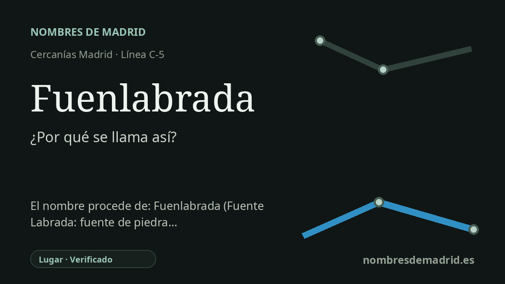

Publicado el · Investigación de Nombres de Madrid · Cómo verificamos cada origen · 6 fuentes consultadas
Respuesta rápida
La estación de Fuenlabrada lleva el nombre del municipio al que sirve. El topónimo significa aproximadamente “fuente labrada” o “fuente de piedra trabajada”, en recuerdo de una antigua fuente que los primeros testimonios relacionaban con el nombre del lugar.
La historia del nombre
La estación de Cercanías toma su nombre directamente de Fuenlabrada, el municipio del suroeste madrileño en el que se encuentra. En términos de transporte, es un nombre geográfico y funcional: Renfe identifica la parada con la ciudad a la que sirve en la línea C-5.
Detrás del nombre municipal hay un topónimo antiguo y transparente: Fuenlabrada, entendido como contracción de Fuente Labrada. Toponomasticon Hispaniae lo explica como un compuesto castellano de fuente y labrada, donde labrada conserva el sentido antiguo de algo trabajado o tallado, especialmente en la piedra. Dicho de forma sencilla, el nombre remite a una fuente de piedra labrada.
La prueba histórica más fuerte procede de las Relaciones Topográficas de Felipe II. El 13 de enero de 1576, los vecinos Pedro Montero y Juan Holgado declararon que el pueblo se llamaba Fuenlabrada porque cerca había una fuente vieja construida de piedra trabajada y argamasa. También transmitieron la creencia local de que la habían hecho los moros.
Esa fuente forma parte del relato fundacional de Fuenlabrada. La página histórica municipal relaciona el origen de la población con habitantes de las cercanas Loranca y Fregacedos, que en la Baja Edad Media se desplazaron hacia lo que acabaría siendo el casco viejo de Fuenlabrada. El Ayuntamiento identifica además la fuente recordada con la Fuente de Fregacedos, en la zona que hoy se conoce como Nuevo Versalles-Loranca.
La etimología, por tanto, es segura, pero un detalle debe formularse con cautela. La atribución a los “moros” pertenece a la tradición local recogida en 1576, no a una conclusión arqueológica demostrada. La estación ferroviaria heredó después el nombre del municipio; Renfe indica que se integró en la red de Cercanías en 1989 como cabecera de la C-5, y el CRTM recoge hoy su correspondencia con la línea 12 de Metro y varias líneas de autobús.